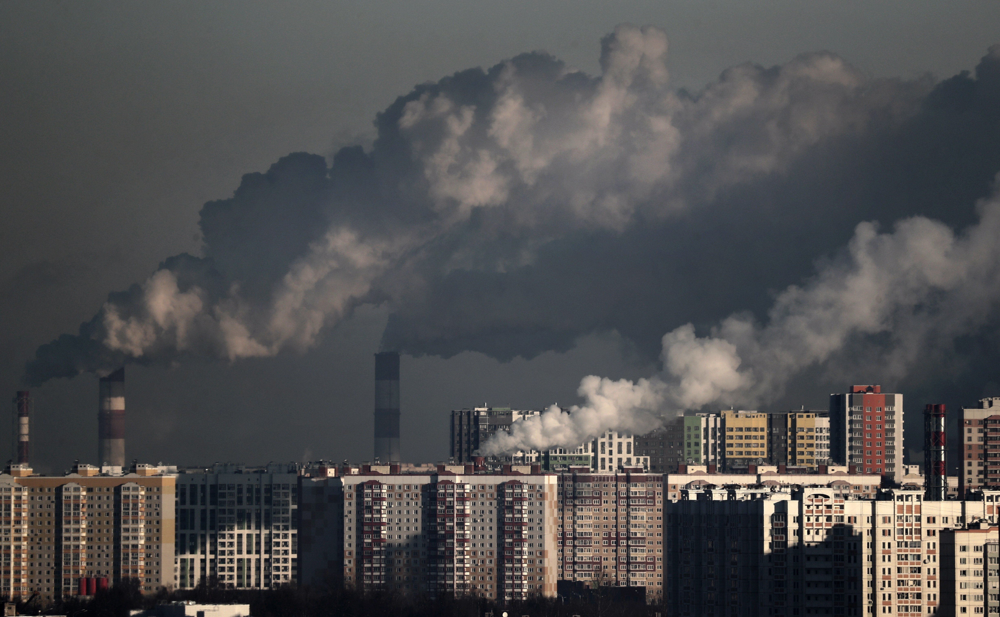

By Abigail Weilbacher
In the Unites States alone, 82% of people have access and/or use social media. With easy access to the world by the use of one small app it enables the constant appearing and chaneg of trends. With fashion trends quickly spiraling and chnaging fashion industrastries must to keep up and keep preoducing in order to keep their busness afloat. Continuing in a chain, this further causes more constsistant production and therefore more pollution from the fashion industries and fast fashion itslef.